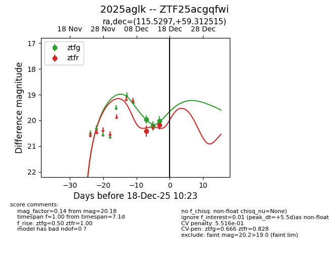
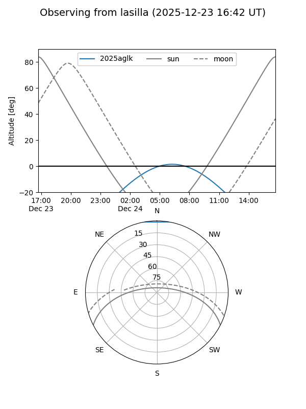
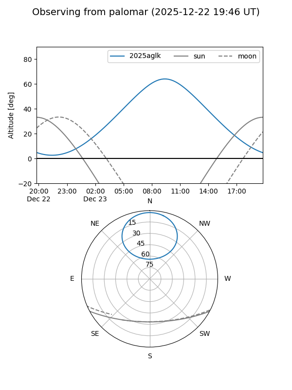

2025aglk
Target 2025aglk at 2025-12-18 11:18
Aliases and brokers:
FINK: fink-portal.org/ZTF25acgqfwi
Lasair: lasair-ztf.lsst.ac.uk/objects/ZTF25acgqfwi
ALeRCE: alerce.online/object/ZTF25acgqfwi
TNS: wis-tns.org/object/2025aglk
YSE: ziggy.ucolick.org/yse/transient_detail/2025aglk
alt names
ZTF25acgqfwi (ztf,fink_ztf)
2025aglk (tns,yse)
Coordinates:
equatorial (ra, dec) = 115.5297,+59.31251
equatorial (HMS+DMS) = 07:42:07.13,+59:18:45.05
galactic (l, b) = (157.8111,+29.45604)
Photometry
last ztfg=20.02, ztfr=20.18
3 ztfg, 2 ztfr detections
Lightcurve

Visibility


Additional plots